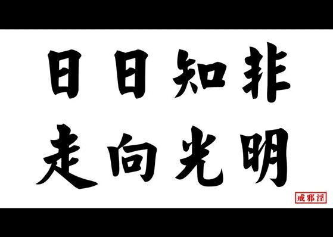

走向光明：
作者：日日知非
编辑：去好恶之心
戒色之路，漫漫长远，奉劝诸君多努力！

日日知非是真正意义上的戒色前辈，坚持了八年以上 ，曾长期任戒色论坛版主。 日日知非前辈的文采非常好，逻辑严谨，思维缜密，他对戒色文章投入的心血是远超常人的，那种认真负责、精益求精的态度，真的很少见。他的戒色文章代表一种风格，飞翔哥认为，他已经把这种严谨的风格做到了相当高的程度，希望有缘的戒友好好学习前辈宝贵的经验。
声明:
- 本文在不影响原著的前提下，对题目稍加修改，仅是为了页面显示原因(网页中对中文标点符号支持不佳)。
- 本文来自网络，没有经过原作者同意，若有不妥，请谅解。